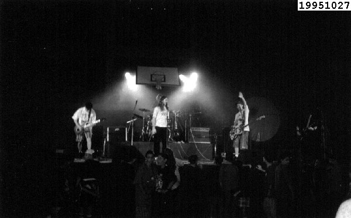

![[voltar pra casa]](../imagens/casa.gif)
show 19951027
aqui está. o 1º show do DUMBS! com menos de 2 meses de banda metemos a cara e fizemos esse show. era num ginásio de um colégio aqui de curitiba, numa festa de halloween. fizemos show para a gurizada de 7ª, 8ª série, todos vestidos de preto e com cara de mau &:) como não tínhamos muitas músicas, foi um festival de covers. arranjamos briga com o cara da mesa de som, que não queria aumentar o retorno e os "seguranças" impediram nossos amigos que estavam lá de agitar, mas fora isso foi um show razoável. ah! o toxa foi pular na introdução de "lesson one" e caiu um pacotaço no chão hihihi, foi muito engraçado. não estávamos nervosos na estréia, e isso foi legal. mas legal mesmo foi o show no dia seguinte, veja lá.
repertório:
01 intro 02 lesson one 03 come out and play (OFFSPRING) 04 anesthesia (BAD RELIGION) 05 carol 06 straight from the jacket (NUFAN) 07 green corn (NOFX) 08 fisticuffs in frederick street (TOY DOLLS) 09 se liga e desliga 10 leave it alone (NOFX) 11 pão sem vina 12 together on the sand (NOFX)
fotos:
foto histórica de nosso 1º show. visão geral do palco e da piazada.
você consegue ver o nissin que está de preto? &:)

cartaz:
sem cartaz